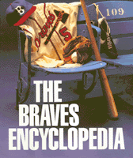

The complete story of the oldest continuously operating professional sports franchise in America
The complete story of the oldest continuously operating professional sports franchise in America


 The complete story of the oldest continuously operating professional sports franchise in America
The complete story of the oldest continuously operating professional sports franchise in America

|  |
The Braves EncyclopediaGary Carusocloth EAN: 978-1-56639-384-3 (ISBN: 1-56639-384-1) |
Philadelphia Book Clinic Certificate of Award, 1996
"For about 50 years Braves baseball has been my life. Gary Caruso's The Braves Encyclopedia covers all the bases. It's well researched and is a must read for all who love this great game."
—Ernie Johnson
1996 marked the 125th season of the oldest continuously operating professional sports franchise in America: the Atlanta Braves. This comprehensive reference begins with the team's birth in 1871 as the Boston Red Stockings, and follows them to Milwaukee in 1953 and to Atlanta in 1966, playing under such a variety of names as Beaneaters, Doves, Rustlers, Braves, Bees, and back to the Braves. Because of this transient past, much of the franchise's history has been misplaced over the years—until now. Beloved not only by their tomahawk-chopping local fans but by baseball fans everywhere, the Braves have become one of today's most successful sports organizations. The Braves Encyclopedia brings it all together.
150 player profiles—from Hall of Famers Hank Aaron, Babe Ruth, Warren Spahn, and Eddie Matthews to all-time greats Dale Murphy, Phil Niekro, and Terry Pendleton to today's stars like David Justice, Greg Maddux, and Steve Avery
600 photographs of players, game highlights, and memorabilia
extensive statistics, including box scores, team and individual records, and trades
season-by-season descriptions bring to life the great moments, the World Series championships, the managerial strategies, the personalities, and the milestones
a comprehensive history of the ballparks
a wealth of little-known facts and surprising anecdotes
"I spent over 25 years of my life with the Braves, yet I didn't realize I was with the oldest continuously operating pro sports franchise in America. The Braves Encyclopedia brings to life the rich history of this fascinating team, from its birth in 1871 to the present. No Braves fan should miss it."
—Phil "Knucksie" Niekro
"What I really like is the way all the information is broken down by year, player, manager and into various other categories. This makes it easy and fun to read, whether you've only got a few minutes or several hours. It's brought back a lot of wonderful memories for me about my Braves career and taught me a lot...about the team and the role my teammates and I played in this fascinating story."
—Dale Murphy
Foreword
Prologue, 1995
Introduction
1. Down Through the Seasons
2. Player Profiles
3. All the Team's Men
4. The Strategists
5. The Front Office
6. The Ballparks
7. The Hall of Famers
8. Great Moments
9. The Postseason
10. Of the Wall
11. Trades, Acquisitions, and Sales
12. Milestones, Honors, and Other Facts
Sources, Photo Credits
Acknowledgments
About the Author
Gary Caruso is the editor of Chop Talk, a monthly magazine covering the Atlanta Braves. As a sports reporter for nearly 25 years, he has written for the Atlanta Journal, has been executive sports editor of the Atlanta Journal-Constitution, and a senior editor and writer for The National Sports Daily.
Baseball Encyclopedias of North America, edited by Rich Westcott.
The purpose of Baseball Encyclopedias of North America, edited by Rich Westcott, is to examine each of the clubs in big league baseball in an encyclopedic format. That is, to provide baseball fans a place to go to find information on a particular team organized in such a fashion that is available nowhere else. The series editor aims to concentrate on the 16 original teams of both leagues and publish each book as he is able to find the right person to do it. The books will all be unique because of their emphasis on three major components: 1) short, straight forward prose accounts of all aspects of the team including seasons, players, stadiums and front office people, 2) listings and statistics of all players of the team, and 3) heavy illustrations. These books can be read cover to cover or used as reference materials.
© 2015 Temple University. All Rights Reserved. This page: http://www.temple.edu/tempress/titles/1163_reg.html.